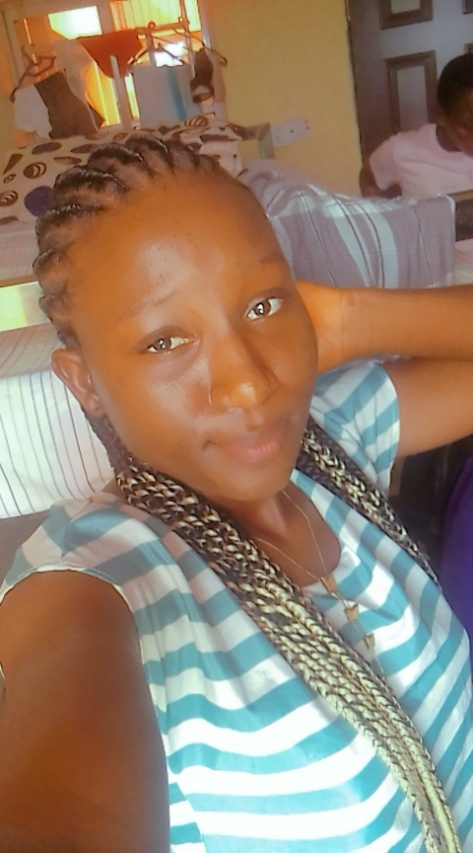
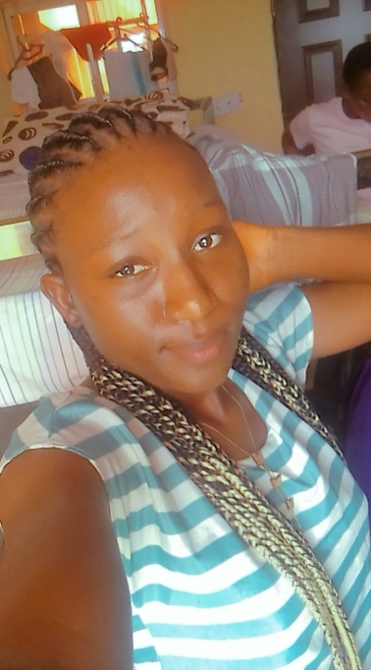

Birth
Adams Nguveren Mary was born on the 24th of July, 2004 in Tse-Yiase Mbakyan, Gwer-East local government area of Benue State.
Short and Precise
Adams Nguveren Mary was born on the 24th of July, 2004 in Tse-Yiase Mbakyan, Gwer-East local government area of Benue State.
Mary was born into the family of Lt.John/Noble Sandra ADAMS KSJI. I am the sixth born of seven(7) children, namely; Felicity Doofan Adams, Jude Sekav Adams, Mimidoo Perpetual Adams, Simon Terver Adams, Michael Terhile Adams(Late), Nguveren Mary Adams and Raphael Luper Adams.
I started and completed my Nursery and Primary education at Trinity Nursery and Primary school, Aliade. Then, I proceeded to the prestigious Notre Dame Secondary School, Mkar Gboko Benue State. Where I also started and completed my secondary education. I also gained admission into the Prestigious Benue State University, Makurdi to study Human physiology. I am in the third year of study.
I'm a very jovial person who who feels very free with everyone and embraces anyone that comes my way regardless of gender, ethnicity, race, etc. I love been around people who are simple, jovial, straightforward, helpful, intelligent, crazy(I must not forget) I love learning new things. I love looking for Trouble(Mostly do this to my friends) I love to see everyone around me happy regardless of what you're facing at the moment.


 
